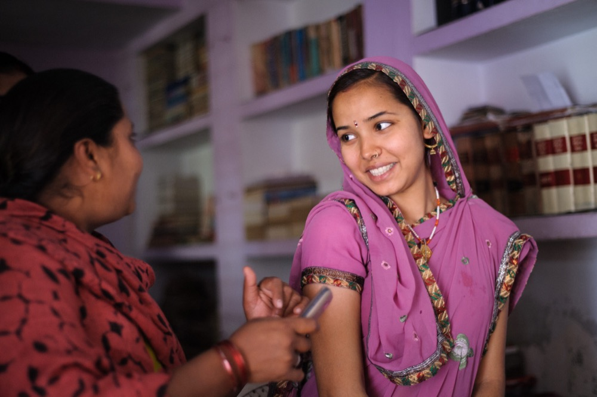

There are roughly 214 million women of reproductive age in low-income regions who want to avoid pregnancy but have no modern way to do so. Here is how the International Federation of Gynecology and Obstetrics (FIGO) used CommCare to bring postpartum family planning to women across six countries, and proved that it worked.
An unmet need
As soon as a woman gives birth, her odds of an unintended pregnancy increase, presenting new challenges for her and her child. Dr. Anita Makins, PPIUD Project Director at FIGO, explains:
“Globally, there are 214 million women with an unmet need for contraception. This signals a disconnect between a woman’s desire to plan her pregnancies and her ability to do so. Unmet need can lead to shorter birth-spacing, which has a negative impact on both maternal and newborn health, and can put additional economic strain on a family, perpetuating the poverty cycle.”
A new approach
A reliable contraceptive method gives a woman control, and with it the opportunity to look after her new family, both in terms of care for her newborn and economic productivity. Effective methods of contraception have been proven to improve maternal health and reduce maternal mortality. This is why FIGO sought a way to provide affordable, long-acting, reversible contraception to millions of women. When they settled on an intrauterine device (IUD), they wanted to make it as effective as possible, and found that a particular method and set of tools, long curved Kelly forceps, would reduce what was perceived to be a high expulsion rate.
FIGO takes on the problem
FIGO received funding to introduce the practice to six hospitals in Sri Lanka. After initial success, it expanded to an additional 12 hospitals in Sri Lanka and six hospitals in each of five more countries: Bangladesh, India, Kenya, Nepal, and Tanzania. The goal was to address the gap in the continuum of maternal health care by increasing the capacity of healthcare professionals to offer IUDs, training community midwives, health workers, doctors, and delivery unit staff.
One key problem was that IUDs did not necessarily have the best reputation. Whether the reason was religious, cultural, or based on a poor prior experience, FIGO knew this was an obstacle. Their answer was to tackle bias at the provider level through training and sensitization, and to raise awareness by counseling women on all aspects of postpartum family planning. In some countries, this meant working with community health workers to educate women who were delivering, as well as the wider community.

Using mobile data collection
As part of the research, FIGO hired data collection officers in each country to collect data on every woman delivering in the participating hospitals. Using CommCare, they tracked counseling, consent, postpartum intrauterine devices (PPIUDs), and follow-up to assess the acceptability, cost-effectiveness, and outcomes of the effort. Emily Tunnacliffe, PPIUD Project Manager at FIGO, explained:
“CommCare provided a unique platform in that they have a global presence, with hubs in some of our project countries. They were able to provide on-hand support and training where needed, giving our country teams ownership of data collection in their particular contexts.”
To track as many patients as possible, FIGO set up follow-ups for each registered case at six weeks and six months, with an 18-month follow-up scheduled, including provider surveys, in-depth interviews, and hospital checklists. After the first year, FIGO was able to track 75% of women delivering in the participating facilities, regardless of their PPIUD status. With data on patients’ knowledge of PPIUDs, consent, insertion, and complication rates, FIGO was able to convince a wider audience in each of the six countries that PPIUDs are a useful and effective method of postpartum contraception. The data also gave clinicians clearer ways to identify problems, train and support individual providers, and improve the insertion method.
A successful project
FIGO’s PPIUD project faced more challenges than this short summary can capture, but in the end the team was able to provide women across Africa and South Asia with stability during a period of their lives that should be empowering, not debilitating. In this instance, mobile data collection was not used to reinforce protocols or run trainings; the clinicians, community midwives, health workers, doctors, and delivery unit staff were ultimately responsible for the program’s success. But the monitoring and evaluation done on the initiative both improved that process and provided proof for additional regions to help the hundreds of millions of women who could still benefit from an effective postpartum contraceptive.
For more on FIGO’s PPIUD initiative, and the source for much of the information referenced here, see the published study.
See what CommCare can do for your program
Talk with our team about digitizing service delivery and monitoring for your frontline workforce.
Get in touch